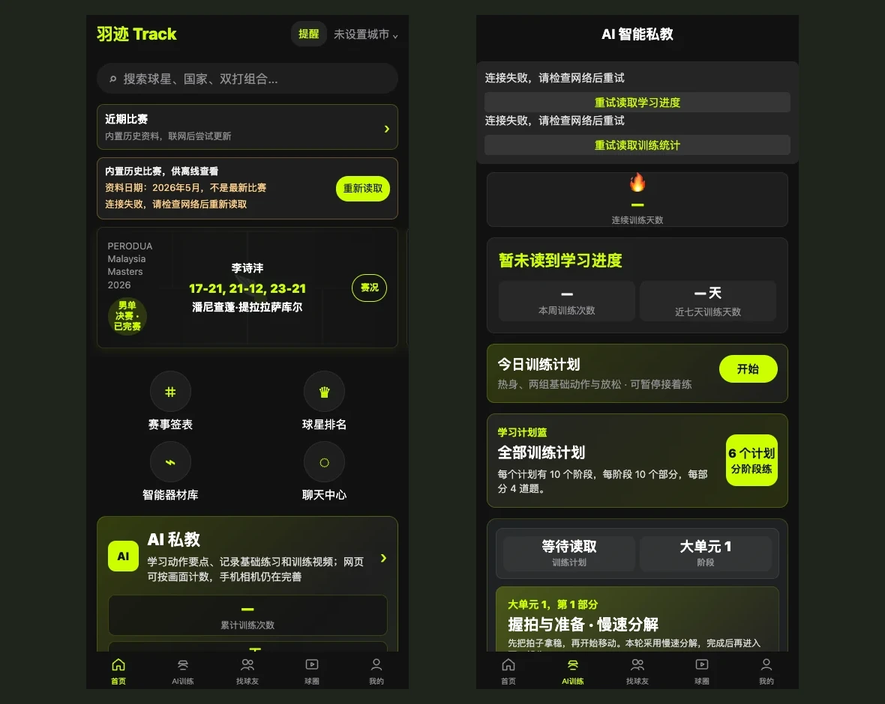
从热爱出发羽迹 / 好羽
把练球与交朋友，放进同一个日常。
让好奇心，一直在场
从一个「如果可以」开始，
到一次真的动手去做。
12 个项目，5 个创作方向。
应用、游戏、实物、学习与小工具。
SELECTED WORK
一份长期的热爱，一次动手的实践，
还有一个想让人走进去的世界。
THE PROJECT COLLECTION
点击作品，查看实际画面与制作资料。
图片可以放大，也可以逐张浏览。
把训练、找球友、比赛和分享，放进同一段羽毛球日常。
首页与训练页面；展示用账号，离线查看
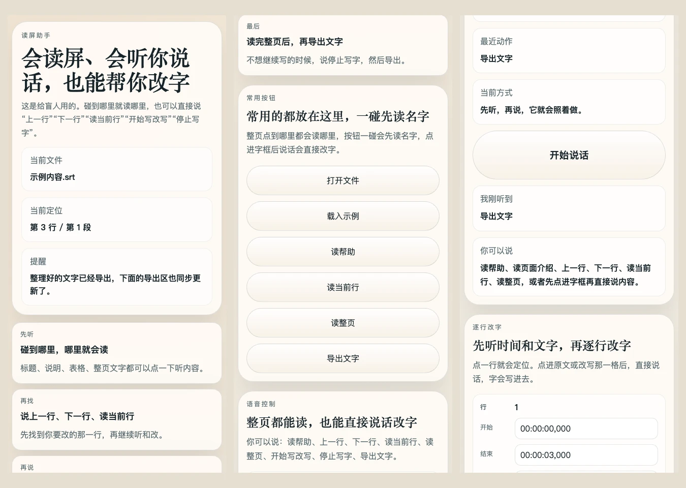
通过听和说修改文字，让看不清屏幕的人也能参与写作。
原有写稿页面的三处实际截图
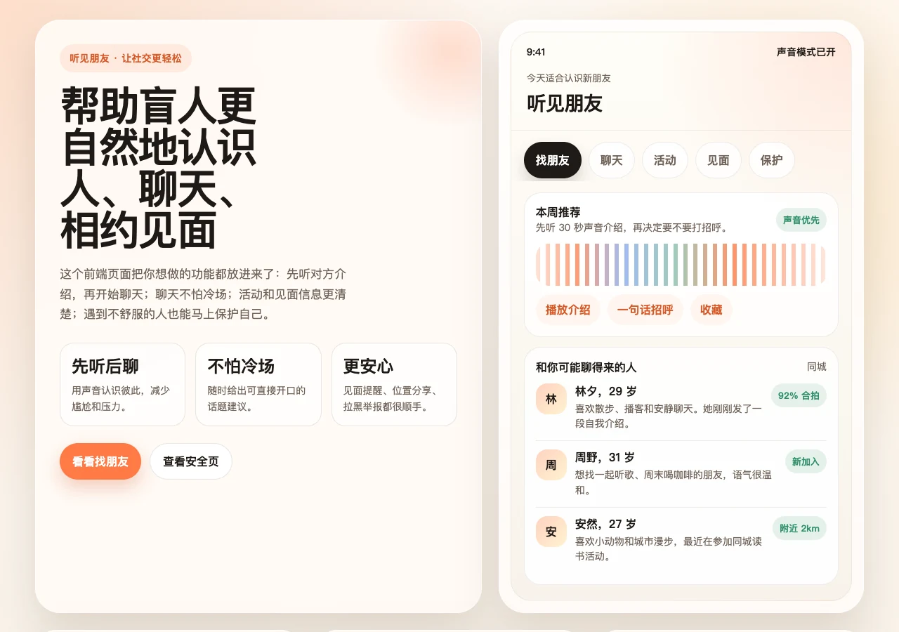
从一段声音介绍开始，让相识多一种可能。
早期交友展示页面，人物资料均为示例
一辆长颈鹿收纳小车，让搬运和拿取物品轻松一点。
制作资料中的升降结构模型
在余晖中守住防线，在战斗之外，留住一盏灯。
冰川地图实际游戏画面
跨过云端障碍，捡起金币，穿上喜欢的新装。
赛道实际游戏画面
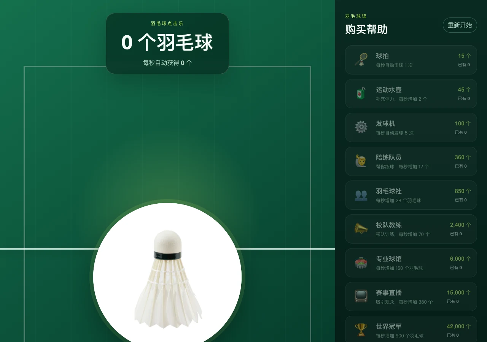
从一次点击开始，慢慢攒出自己的羽毛球世界。
游戏页面与购买项目的实际画面
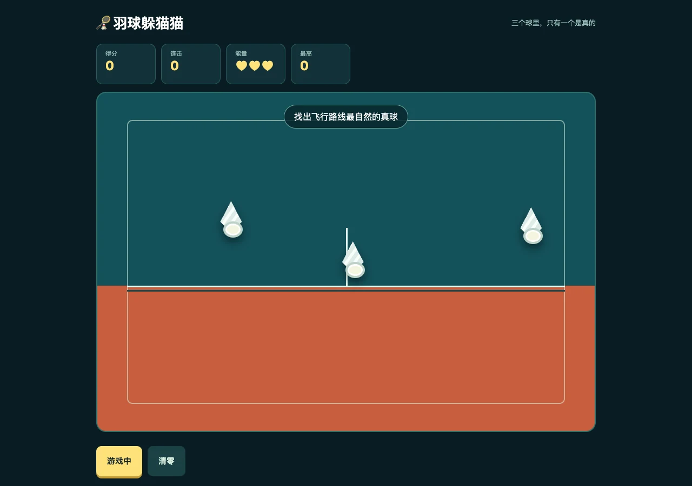
三个羽毛球，一次选择，试着把连击延续下去。
开始一局后的实际游戏画面
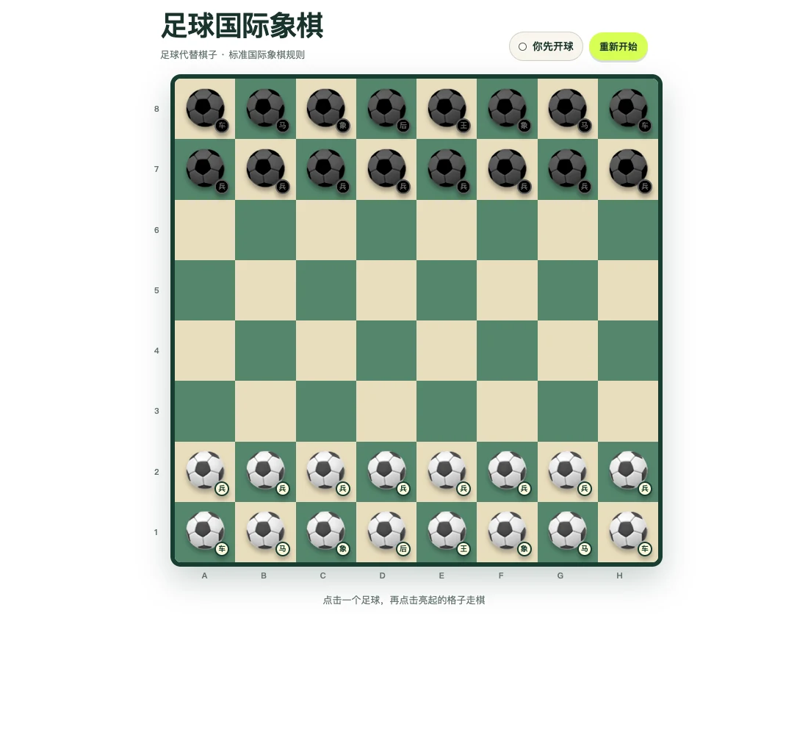
把足球带进棋盘，在另一个球场认真思考。
棋盘实际画面
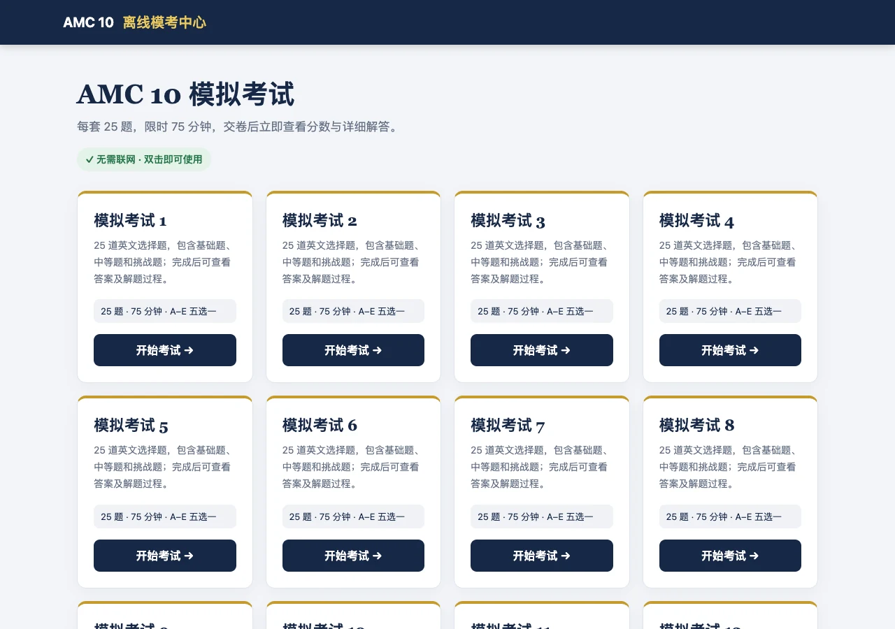
把日常练习做成工具，让每一次思考都有回看。
离线试卷选择页面
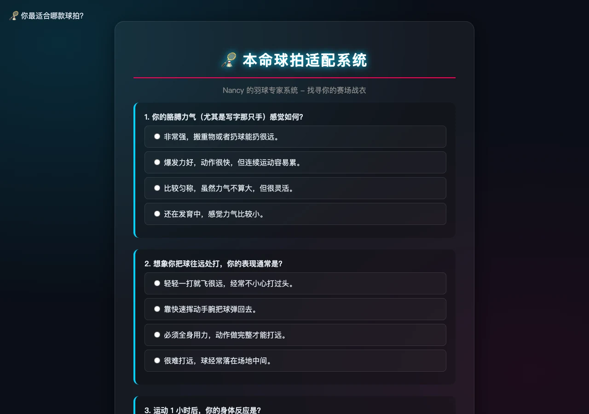
从习惯和打法出发，寻找更适合自己的球拍。
球拍适配问卷实际页面
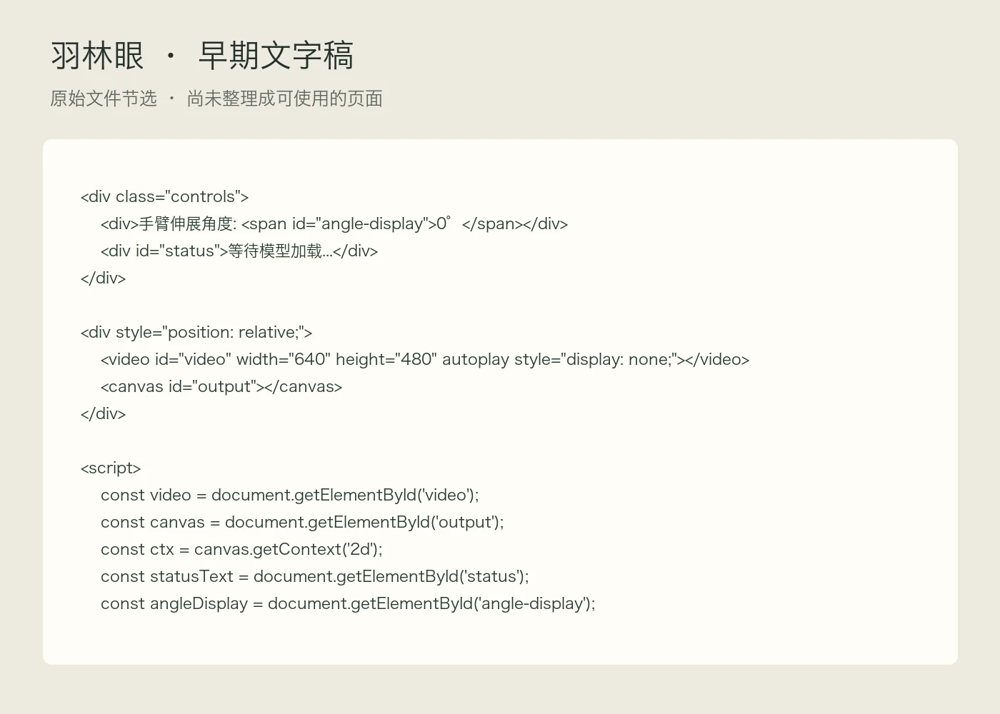
尝试看见肩、肘、腕的位置，为独自练球提供提醒。
原始文字稿节选，尚不能直接使用
A LITTLE ABOUT ME
我是 Nancy 李盈萱。
喜欢羽毛球，也喜欢把想法做出来。
我的作品从兴趣出发，也从生活里的小问题出发：怎样更好地练球，怎样让表达更方便，怎样让搬运轻松一点，怎样做出一个让人想再玩一局的游戏。
这里收集了我的应用、游戏、实物和小工具，也保留了还不成熟的尝试。它们记录着我怎样观察、动手、调整，再往前走一步。
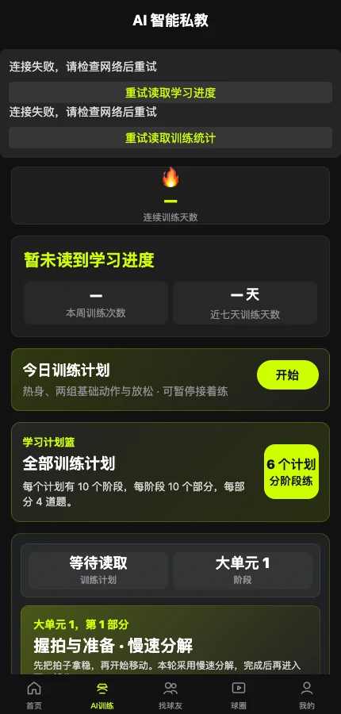
放大查看 ↗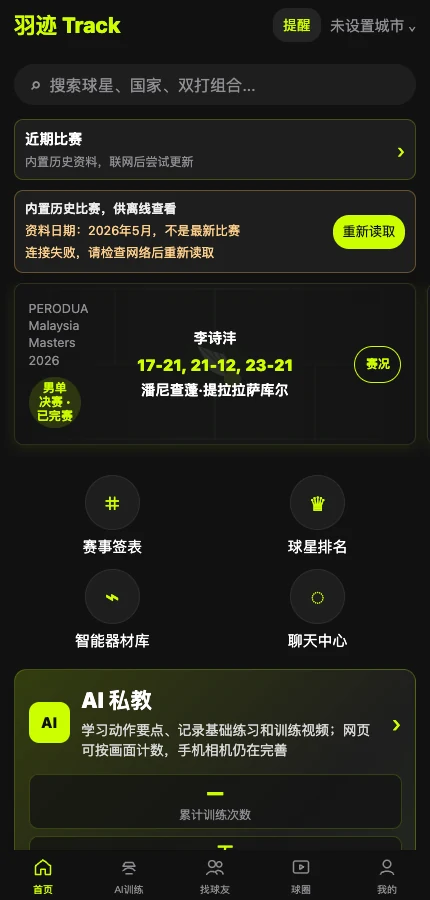
放大查看 ↗应用 / 持续完善
围绕羽毛球，帮助使用者练习、寻找球友、了解比赛和分享生活。
把自己对羽毛球的热爱，变成一套围绕练球与交朋友的使用体验。
已经有较多页面，目前仍在完善。真实比赛资料、动作判断与手机上的完整使用过程，还需要继续确认。
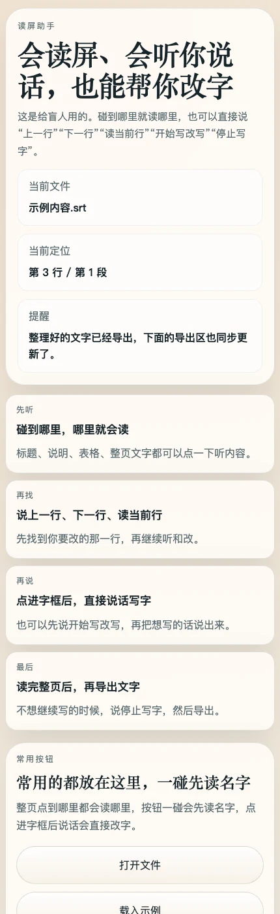
放大查看 ↗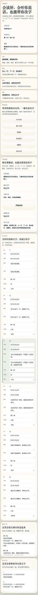
放大查看 ↗应用 / 功能整理中
帮助视障使用者通过朗读和语音修改，完成字幕整理、分段写稿与整稿审阅。
让表达不被看屏幕的困难挡住，让更多人能够参与口述影像内容的创作。
保留了写稿和朗读相关内容，当前入口已用于其他展示，需要重新整理才能恢复完整操作。
应用 / 早期展示
探索视障朋友怎样先听声音、认识彼此，再聊天和相约参加活动。
减少认识陌生人的紧张感，也让第一次见面与自我保护更容易理解。
已有早期展示页面，人物和对话均为示例。真实发消息、交友和求助功能尚未确认。
实物 / 团队作品
设计会移动、能升降的长颈鹿收纳小车，让实验室搬运和日常拿取物品更省力。
从东西太多、反复取物这些具体困难出发，和团队一起把想法做成一件实物。
已有模型、海报和团队展示资料。各项动作的完成情况需要结合实物演示确认，个人负责部分也待补充。
游戏 / 玩法扩展中
在不同战场抵挡机械敌人，通过战斗赚取金币、购买武器，并逐步推进故事。
把射击、地图探索、武器成长和《留一盏灯》的故事放进同一个世界。
已经积累较多游戏内容，仍在扩展任务和支援玩法。这里展示已有画面与资料，最新玩法以游戏实际版本为准。
游戏 / 已有游戏内容
操作小团子在天空赛道跨栏、绕路、弹跳，收集金币并解锁外观。
让简单的角色操作，在不同赛道中带来找路、跳跃与等待机关的不同挑战。
已有六条赛道和换装内容，目前为单人游戏，伙伴由电脑控制。
游戏 / 有离线版本
点击羽毛球得分，再购买帮助，让羽毛球数量自动增长。
把简单的点击累积玩法，换成自己熟悉又喜欢的羽毛球主题。
已有游戏页面、图标和离线版本。不同设备的显示与旧进度读取仍可以继续检查。
游戏 / 规则完善中
在三个羽毛球中寻找真球，累积分数与连击，点错则扣除生命。
尝试用很短的一局游戏，让人愿意再观察一次、再选择一次。
已有游戏页面，但真假球之间还缺少可靠的辨认提示，观察规则需要继续完善。
游戏 / 已有棋盘页面
用足球元素表现国际象棋，让一个人也能与电脑下棋。
为熟悉的棋类规则换上自己喜欢的主题，并补齐单人对弈需要的操作。
保留可交互的棋盘页面，目前使用时需要联网读取下棋规则。
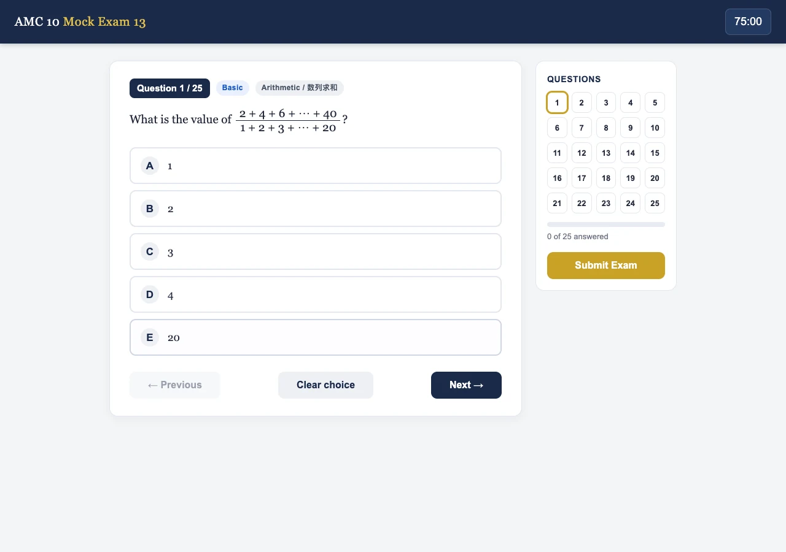
放大查看 ↗学习 / 有离线版本
在网页上选择试卷、限时答题，交卷后查看答案和解题过程。
把自己需要的数学练习，整理成可以反复使用的模考网页。
已有多套练习和离线版本。部分试卷重复，题目答案与时长标注还需要统一核对。
小工具 / 已有问卷页面
回答关于力量、球龄、习惯和打法的问题，获得球拍与风格建议。
让不熟悉球拍的人，先用简单问题了解自己的需求。
已有问卷和推荐页面，建议由预先设定的答案规则生成，不代表真实试打结果。
小工具 / 早期构想
探索通过摄像头观察手臂位置，为羽毛球动作练习提供提示。
从自己练球时没人提醒动作的困扰出发，思考怎样获得更及时的反馈。
目前保留的是早期文字稿，还不能直接使用。需要先整理成能打开的页面，再检查动作提示是否可靠。